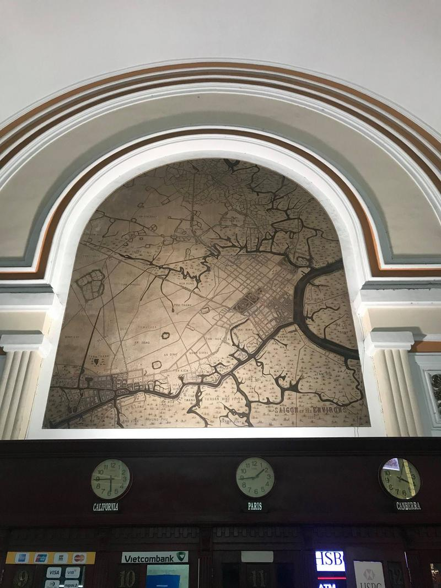
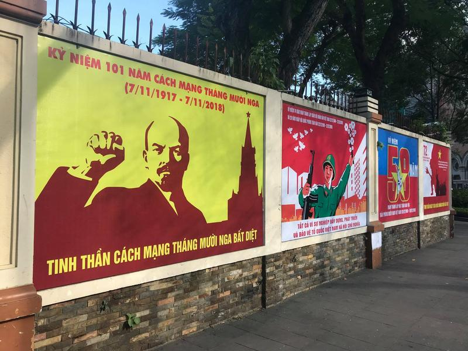

Na kole přes Asii - vietnamská část podzim 2018
Vydal jsem se na cestu přes Asii na kole s krátkou zastávkou v Japonsku a Severní Koreji. Takový je tedy plán. Zatím něco málo z Ho Chi Minhova města.
Ahoj, dnes jsem se podíval do deníčku a zjistil jsem, že je to už 500. den na cestě kolem světa. To je pro mě mystické číslo, neboť původně jsem si stanovil 500 dní jako maximální délku výletu. Místo návratu jsem se však rozhodl udělat si takový malý cyklistický výlet přes Asii z Ho Chi Minh City do Baku a vezmu to přes Japonsko a Severní Koreu. Dost ale pochybuji, že tam skutečně dojedu, takže zatím vše plánuji jen do Indie do Kalkaty.
Jubileum jsem oslavil tak, že jsem si pořídil bicykl značky Giant a nechal si ho sestavit pšoukajícím Vietnamcem. Kolo stálo jen o trochu více, než kolik stojí jízdenka na vlak z Tokia do Ósaky a daruji ho prvnímu Ázerbájdžánci (Indovi), který mě na něco pozve.
Nejprve něco málo z Ho Chi MInh. Takhle vypadá hlavní poštovní stanice v Ho Chi Minh City uvnitř, je to nesmírně krásná budova z 19. století.
Mapy staré více než 120 let namalované na stěně uvnitř poštovní budovy.

Šťastný nový rok 2019!

Já buduji, ty buduješ, on buduje, ona buduje, ono buduje. My budujeme, vy budujete, oni budují. Soudruh Lenin na vše dohlíží.

VIetnamská kultura v parcích.
Výprodej ve vietnamském Apple Store.
Centrum města. Toho medvěda jsem si všiml až teď.
Ho Chi Minh City je moderní centrum Vietnamu s mrakodrapy.
Hotely v centru.
Válečné muzeum včetně slavné fotografie, která napomohla k ukončení války.
Pohoda v centru. V příštím životě chci být autobusákem nebo autobusem.
Vietnamské pánské toalety, když vcházíte.
Vietnamské pánské toalety, když vycházíte.
Výhled z mého saigonského apartmá.
A tady bydlím. Teď nemyslím ten most, ale okolí.
Okraj Saigonu. Prý už je Vietnam hrozně moc turistický. Nevím no, třeba tady jsem během 20 dní neviděl ani jednoho Evropana.
Život je tady ale dost vo hubu. Když chcete přejít přes přechod, musíte nejprve jako kůň přeskočit přírodní plot a pak kličkovat mezi motorkama.